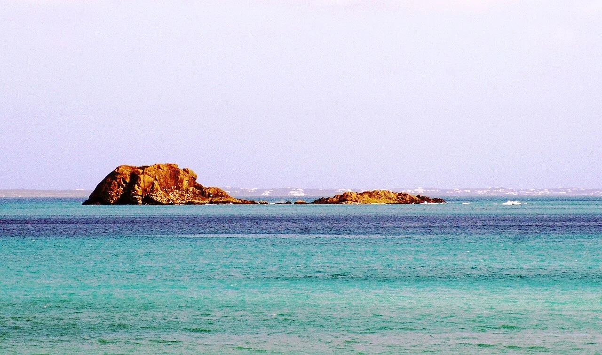

Rocher Créole — Grand-Case
Grand-Case, Saint-Martin · plongée, snorkeling

Îlot rocheux de Saint-Martin, au large de Grand-Case, entièrement protégé dans la réserve naturelle nationale. La réserve le range parmi les meilleurs sites de plongée du côté français, pour les débutants comme pour les confirmés : l’eau y est peu profonde, idéale pour apprendre à plonger, avec ou sans bouteille. Des fous bruns et des phaétons nichent sur le rocher. La saison sèche, de décembre à avril, est la plus agréable : soleil presque constant et très peu de pluie.
- Lieu
- Grand-Case, Saint-Martin
- Niveau
- Variable selon les conditions
- Activités
- plongée, snorkeling
- Type d'eau
- Mer / océan
- Coordonnées
- 18.12, -63.06 (position approximative du secteur)
Dangers à connaître
- Mouillage sur les bouées de la réserve seulement : prends la bonne pour ne pas abîmer les mouillages.
- Moteurs interdits à moins de 30 m de la plage ; débarquer sur la plage et escalader le rocher aussi.
- Fous bruns et phaétons nichent sur le rocher : ne le grimpe pas.
Le conseil d'Ocean Buddy
Amarre-toi sur la bonne bouée : jaune pour les bateaux de plaisance, blanche « diving only » pour les clubs de plongée, blanche « dinghy only » pour les annexes.
Ouvrir dans Ocean Buddy Télécharger sur l'App Store
Source : Fiche Ocean Buddy · décembre 2026 · d’après la Réserve naturelle de Saint-Martin, Wikipédia et l’office de tourisme de Saint-Martin · à vérifier localement.